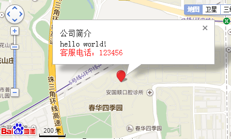

1、首先要有密钥AK ，可以自己注册获取或复制别人的 。搜索百度地图API （http://lbsyun.baidu.com/apiconsole/key）
2、地图示例
<head>
<meta charset="UTF-8">
<title></title>
<script type="text/javascript" src="http://api.map.baidu.com/api?v=2.0&ak=weuMwIVhzBCjZgGaPA5SVOQV"></script> //这里是引入，ak=您的密钥
<script type="text/javascript" src="https://api.map.baidu.com/api?v=2.0&ak=你的密钥&s=1"></script> //如果是https的网站，后面要加&s=1
</head>
<style>
*{margin:0;padding:0;}
#container{
margin:50px auto;
width:800px;height:600px;
border:2px solid #F65F57;
}
</style>
<body>
<div id="container"></div> //显示地图的div
<script type="text/javascript">
var map= new BMap.Map('container'); // 创建地图实例
var point= new BMap.Point(114.059627,22.627415); // 创建点坐标
map.centerAndZoom(point,16); // 初始化地图，设置中心点坐标和地图缩放级别
map.addControl(new BMap.NavigationControl()); //添加平移缩放控件，左上方位置
map.addControl(new BMap.ScaleControl());//添加比例尺控件，左下方位置
map.addControl(new BMap.MapTypeControl());//地图类型控件，右上方位置
map.addControl(new BMap.OverviewMapControl());
var marker = new BMap.Marker(point); // 创建标注
map.addOverlay(marker); // 将标注添加到地图中
msg = {
width : 300, // 信息窗口宽度
height: 50, // 信息窗口高度
title : "公司简介" , // 信息窗口标题
offset:new BMap.Size(8,-12) //调位置，相当于css相对定位relative
}
// 创建信息窗口对象 ，写文字内容
var infoWindow = new BMap.InfoWindow("<p>hello world!</p> <div style='color:red;'>客服电话：123456</div>", msg);
map.openInfoWindow(infoWindow, map.getCenter()); // 页面显示信息窗口
</script>
</body>如图：

引原文：https://www.cnblogs.com/luhailin/p/6639943.html